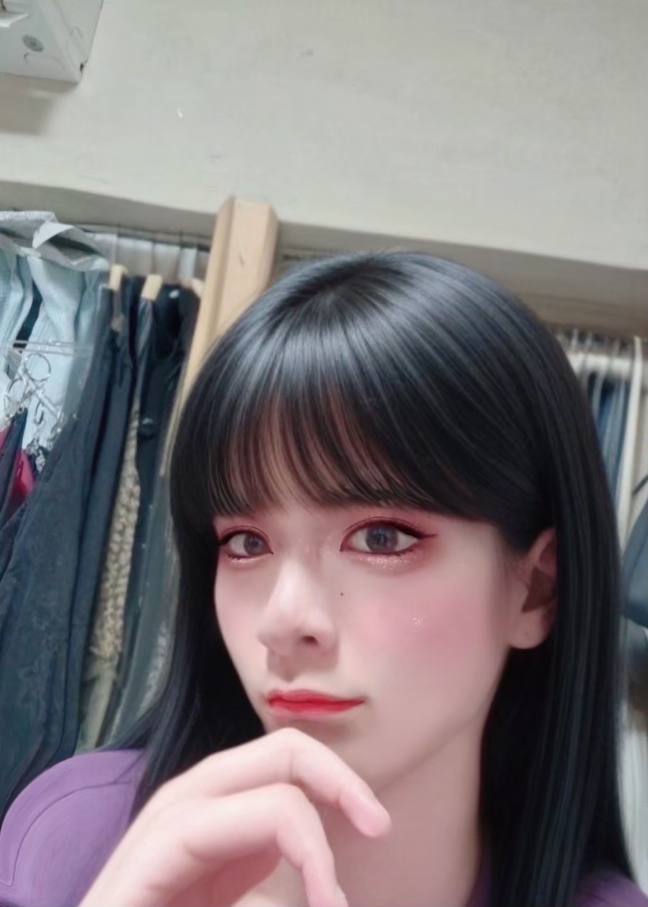

[速報]同学年男子ふたりの記憶すれ違いで早くも波乱の予感⁉

招待の決定はぺぺちとのんのんが主導
前夜、ぺぺちとのんのんがえぬの再加入について話し合った。 ふたりはえぬの落ち着いた雰囲気と真面目さを評価し、グループの幅を広げられると判断。相談なしで招待を決めた。 のんのん：「えぬ、また入れてみようよ」 ぺぺち：「あいつ、意外としっかりしてるしな」 ここちゃんは静観の構えを見せつつも、加入を歓迎する姿勢だった。
ロメは「勝手に招待しないでくれる？」と怒りを露わに
加入直後、ロメが強い口調で反発した。 ロメ：「ちょっと、僕に一言もなく勝手に招待って、ありえないんだけど」 ロメ：「えぬって人、前にいたらしいけど、僕は知らないし」 ロメ：「空気読めてないよ。こういうのはちゃんと言ってほしい」 普段は丁寧語も使うロメだが、このときはため口全開で、かなり鼻につく言い回しだった。 独特のウザさがメンバーをやや困惑させた。
えぬ「俺ここにいたよ」→ロメ「知らないよ」の珍しい食い違い
えぬは驚きつつも冷静に答えた。 えぬ：「ああ、前にここに一度いたんだよ」 えぬ：「まあ、僕に追い出されたけどね」 しかしロメは… ロメ：「は？そんなの知らないし、全然覚えてないよ」 この食い違いが場を一層微妙にした。
📝 編集部コメント
静かな日常に潜む小さな火種。 このグループにはまだまだ波乱が起きそうだ。 えぬの再加入は、メンバーそれぞれの個性と距離感を浮き彫りにした形となった。 ロメのぶっきらぼうな言葉の裏には、案外繊細な思いも隠れているのかもしれない。 彼らのやりとりは、これからも目が離せない。 （文責：インターナショナル非公式広報)